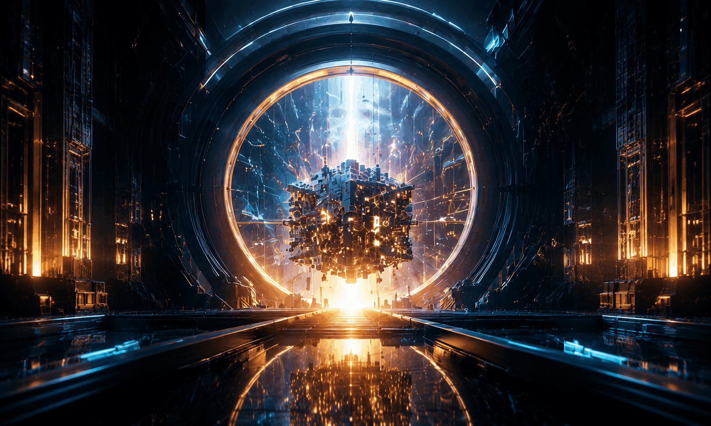

Esta idea naceu tras decatarse a principios dos 80's, de que os ordenadores tradicionais non podían simular de forma eficiente a física do mundo subatómico.

O físico Feynam observou que as máquinas clásicas parecen fundamentalmente incapaces de simular de maneira eficiente os sitemas de mecánica cuántica. A razón redica o crecemento exponencial do espacio de estados: describir un sistema cuántico con só unhas poucas decenas de partículas require máis memoria clásica da que cualquera ordenador existente podería almacenar. A solución propuesta por Feynman foi radical pero elegante: para simular a naturaleza, que funciona baixo leis cuánticas, se necesitaría un ordenador construído baixo esas mesmas reglas cuánticas.
Índice